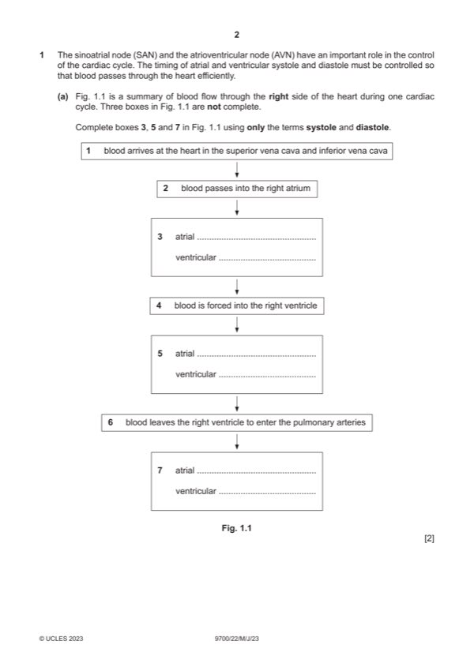

Question 1

Original paper page 2
Part 1(a) — solution
- 3 = (atrial) systole 2
Mark points
- 3 = (atrial) systole 2
Part 1(b) — solution
allow responses in context of both sides or one side of heart 2
any two from:
atria and ventricles, do not contract / are not in systole, at the same time ; AW
ventricles, contract / are in systole, after atria ; AW ora
idea that allows atria to empty (completely) / allows ventricles to fill ;
A idea that (all) blood, pumped / AW, into ventricles (ready for systole)
2023 Page 8 of 22
9700/22 Cambridge International AS & A Level – Mark Scheme May/June 2023
Mark points
- Include the ideas shown in the solution above.
Part 1(c) — solution
opening of tricuspid valve 3
pressure in (right) ventricle becomes lower than pressure in (right) atrium
or
pressure in (right) atrium becomes higher than pressure in (right) ventricle ;
opening of pulmonary (semilunar) valve
pressure in (right) ventricle becomes higher than pressure in pulmonary artery
or
pressure in pulmonary artery becomes lower than pressure in (right) ventricle ;
if mp1 and 2 have correct ideas but not referred to pressures on both ‘sides’ of the valve, allow one mark for idea of,
increasing / high, pressure opening each of the valves
help flow of blood through the heart
any two from:
one-way flow of blood / prevents backflow of blood / directs blood in correct direction / blood flows in one direction / AW ;
A blood flows from atrium to ventricle to, pulmonary artery / lungs
blood flows from (area of) higher pressure to (area of) lower pressure ;
idea that (blood) pressure changes aid coordination ;
e.g. semilunar valve is open (about same time) when tricuspid valve is shut
2023 Page 9 of 22
9700/22 Cambridge International AS & A Level – Mark Scheme May/June 2023
Mark points
- Include the ideas shown in the solution above.
Part 1 — solution
carbovir triphosphate is (similar to / same as), an activated nucleotide / a nucleotide / not a nucleoside ;
A similar to, A / G, nucleotides
I ref. to purine
Mark points
- Include the ideas shown in the solution above.
Part 1 — solution
prevents polymerase from adding DNA nucleotide to growing chain / AW ;
A idea of complete (viral) DNA not made if, chain does not elongate / no more nucleotides added
R adding base
R if in context of stop codon / transcription
I ref. to complementary base pairing
Mark points
- Include the ideas shown in the solution above.